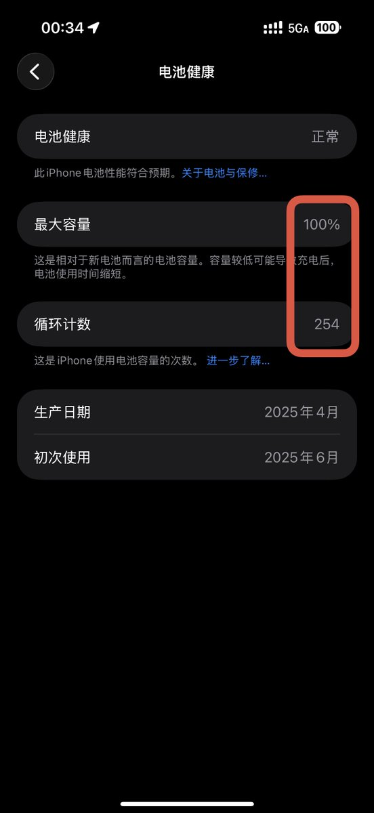
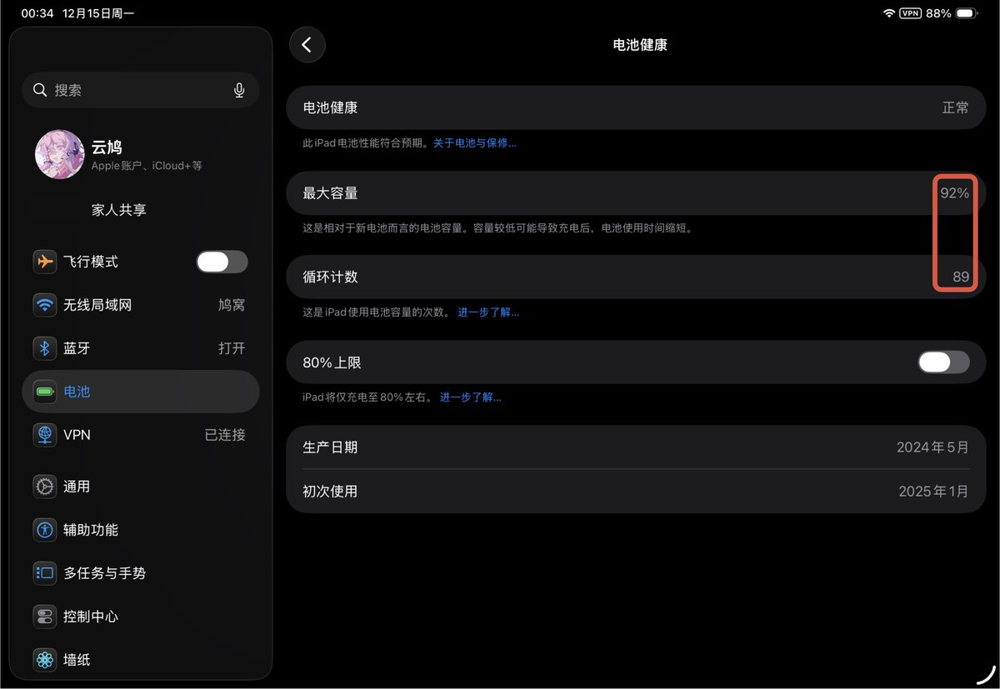

lovely水
@lovelyshuimao
@Cldeop m4续航和前几代比不错，但是ipad本来就只有10小时时间


雲鳩
@Cldeop
设计iPad Pro电池的人你妈应该原地飞升😇
左图为我iPhone 16 PM的电池，循环254次电池健康100%，基本一天一充
右图为我iPad Pro M4的电池，循环89次电池健康92%，玩高负载游戏一个半小时没电，不知道的还以为游戏本呢
有没有同样情况的😇苹果这样搞是逼着我换电池啊 https://t.co/OIB8q2jhT3